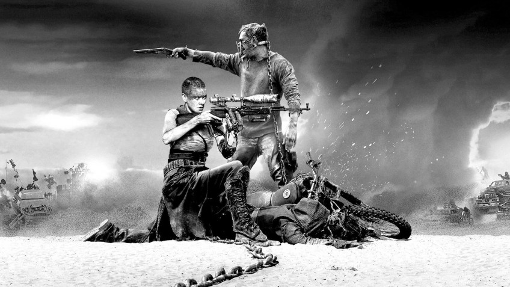
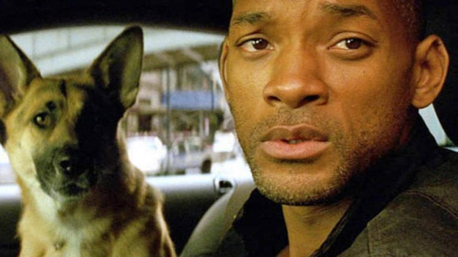
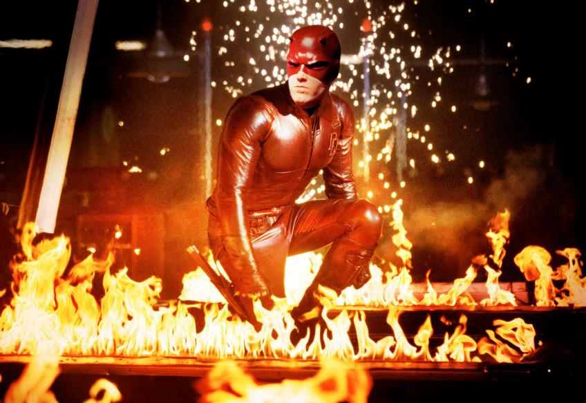
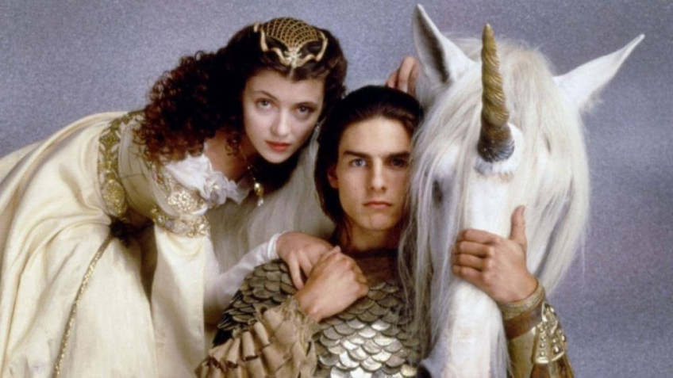
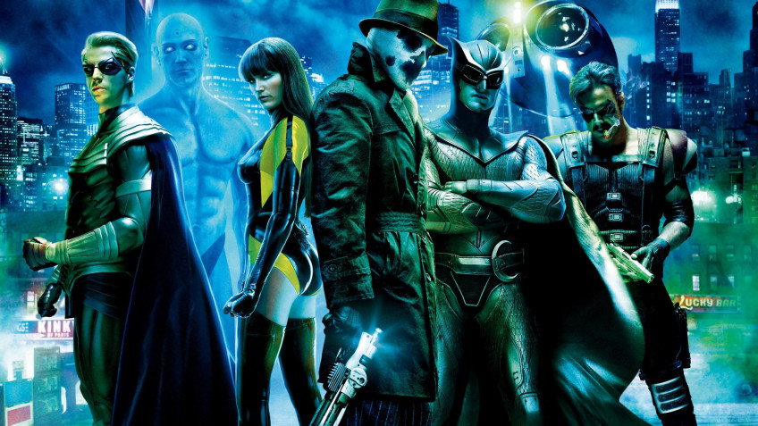
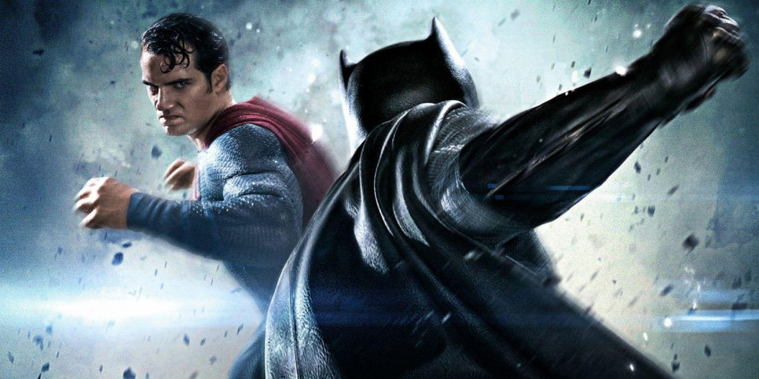
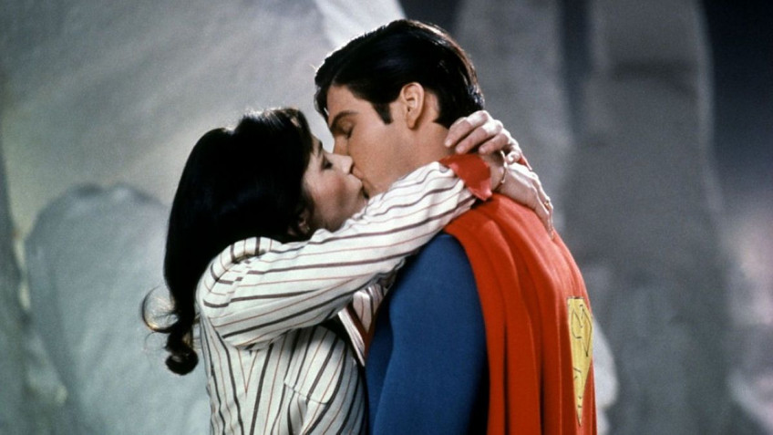
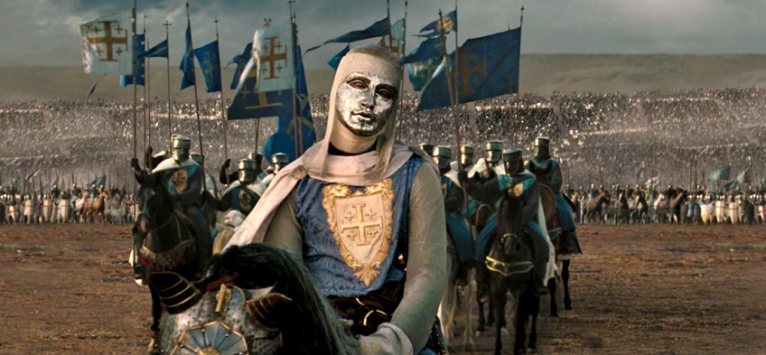
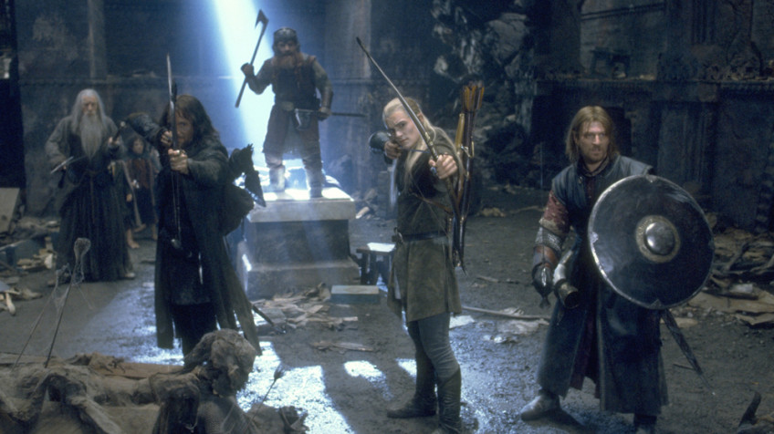
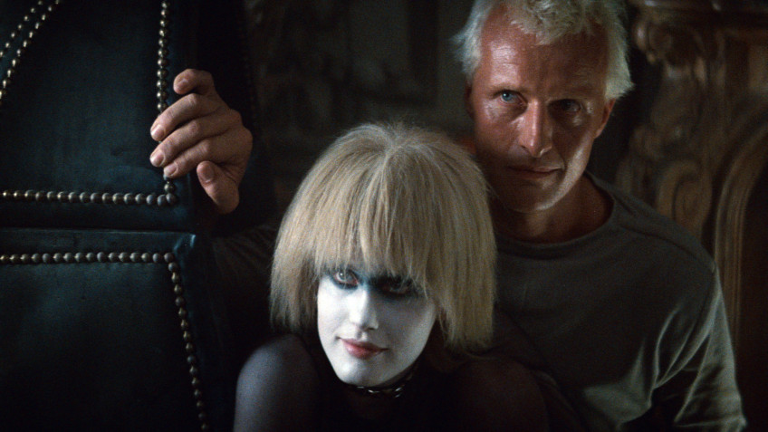

10-е место. «Безумный Макс: Дорога ярости»
И начнём мы с версии, которая не добавляет в фильм что-то новое, а, наоборот, убирает из него лишнее. После того, как режиссёр Джордж Миллер наконец закончил свой грандиозный долгострой под названием «Безумный Макс: Дорога ярости» и собрал урожай наград, он захотел выпустить фильм в том виде, в каком тот изначально задумывался. То есть чёрно-белым. Так появилась версия под названием Black & Chrome. И если вы думаете, что вместо покупки специального издания фильма достаточно просто пошаманить с настройками телевизора или монитора, то сильно ошибаетесь. Каждую сцену перекрашивали отдельно, чтобы картинка не стала похожа на серую кашу. В результате голливудский блокбастер превратился в панковский арт-хаус 70-х — то есть стал ближе по духу к оригинальному «Безумному Максу». Избавившись от ярких красок, пустошь предстала перед зрителями в своём истинном обличье: безжизненной, жестокой, гнетущей. Вот он, постапокалипсис во всём своём великолепии.
Кстати, после Миллера режиссёр Джеймс Мэнголд выпустил так называемую «нуарную» версию своего «Логана». Да и у «снайдерката» есть чёрно-белый вариант. Но столь же яркого, уж простите за каламбур, впечатления, как хромированная «Дорога ярости», они не производят.
9-е место. «Я — легенда»
Финал — важнейшая часть фильма. Концовка подводит итоги, подталкивает зрителя к каким-то выводам и оставляет самое сильное впечатление. Ну… это если она удачная. А если нет, то и вся остальная картина просядет. Ярчайшее тому доказательство — «Я — легенда» с Уиллом Смитом.
Лента снята по мотивам одноимённого романа Ричарда Мэтисона, но театральную версию с первоисточником роднит только самая общая фабула: доктор Роберт Невилл в одиночку пытается выжить в мире, захваченном вампирами. На этом сходства заканчиваются. По ходу дела протагонист встречает женщину с ребёнком, а в конце спасает их, подрывая себя вместе со стаей упырей. Ну а созданную Невиллом вакцину от вампиризма успешно довозят до лагеря выживших. Хэппи-энд.
Альтернативный финал фильма гораздо ближе к концовке оригинального романа. Во время последней обороны Невилл понимает, что лидер вампиров всего лишь хочет вернуть свою возлюбленную, которую доктор похитил ради экспериментов. Герой осознаёт, что заражённые разумны и у них есть чувства, а сам он месяцами напролёт хладнокровно убивал их собратьев. За этой сильной сценой всё ещё следует формальный хэппи-энд, но привкус у него уже не настолько приторный.
8-е место. «Сорвиголова»
«Сорвиголова» с Беном Аффлеком в своё время отхватил немало жёсткой критики, причём вполне заслуженно. Фильм вышел через год после первого «Человека-паука» и казался попыткой нажиться на его популярности, ведь снимала его другая студия. И, в общем-то, так оно и было: по крайней мере, такую цель преследовали продюсеры, которые безжалостно порезали «Сорвиголову», чтобы картина подходила для семейного просмотра.
Режиссёрская версия с рейтингом R (18+) вышла на DVD несколько лет спустя и получила куда более тёплый приём. Оказалось, что из театрального варианта пропало не просто несколько сцен, а целая сюжетная линия. В ней Мэтт Мёрдок и его партнёр Фогги пытаются защитить в суде мелкого преступника, которого обвиняют в убийстве женщины. В процессе выясняется, что дело напрямую связано с главным злодеем фильма, Кингпином, и именно это расследование приводит к аресту антагониста в финале. То есть продюсеры почти целиком выкинули из картины элементы детектива и судебной драмы — как раз то, что отличает комиксы про Сорвиголову от прочей супергероики.
А ещё в режиссёрской версии экшен стал гораздо жёстче, поступки героев — логичнее, а сюжетные дыры — меньше. Это не делает «Сорвиголову» совершенно другим фильмом, но точно делает его лучше.
7-е место. «Легенда»
Вряд ли найдётся ещё один режиссёр, который любит возвращаться к собственным фильмам так же сильно, как Ридли Скотт. У 11 его фильмов есть альтернативные издания, и до двух самых значимых мы ещё доберёмся. Но начнём с «Легенды» — картины, которую сегодня почти никто не вспоминает. Оно и понятно: фильм вышел в 1985 году, в самый расцвет эпохи меча и магии на большом экране, и несколько затерялся на фоне таких мастодонтов, как «Конан-варвар», «Бесконечная история» и «Принцесса-невеста». Ну и к тому же «Легенда» — одна из самых слабых лент Скотта. Во всяком случае, в своём прокатном варианте. Даже при скромном хронометраже в полтора часа она кажется ужасно затянутой и попросту скучной. И это несмотря на молодого Тома Круза, феноменально загримированного Тима Карри и саундтрек группы Tangerine Dream. Магия вроде есть, но как-то её маловато.
Зато её гораздо больше в режиссёрской версии, которая была найдена и восстановлена в начале 2000-х. Длится она аж на сорок минут дольше — и сцены, вырезанные из театралки, наделяют события фильма необходимым контекстом. В результате происходящее кажется уже не сюрреалистическим сном, где всё происходит просто «потому что», а вполне понятной и ладно выстроенной сказкой. Восприятие облегчает и альтернативный саундтрек от великого Джерри Голдсмита: он куда больше подходит героическому фэнтези, чем ретро-электроника. Хотя тут, конечно, дело вкуса.
6-е место. «Хранители»
Но перейдём уже к Заку Снайдеру, который тоже был известен любовью к альтернативным изданиям задолго до «Лиги справедливости». Хотя началось всё тоже с супергероики — с «Хранителей». Пускай пуристы считают комикс Алана Мура и Дэйва Гиббонса неэкранизируемым, а саму адаптацию называют неудачной, у фильма 2009 года много поклонников. При этом сам Снайдер театральной версией был не особо доволен: слишком многое пришлось пустить под нож. Ну а Warner Bros. была не особо довольна сборами, однако пошла на компромисс и выпустила на видео режиссёрскую версию.
Дополнительные 20 минут и альтернативные монтажные склейки не особо влияют на сюжет, но зато позволяют лучше понять персонажей и мир фильма. Подробнее раскрываются жестокость и безумие Роршаха, роман между Дэном и Лори, взгляды Доктора Манхэттена. В конце концов, именно в режиссёрской версии Комедиант произносит фразу, которая стала слоганом фильма: «Правосудие настигнет каждого из нас. Не важно, за что».
Позже «Ворнеры» выпустили ещё и так называемую «ультимативную» версию продолжительностью в три с половиной часа. Там в фильм вмонтировали короткометражный мультик «История чёрной шхуны», чей сюжет выступает аллегорией сюжета самих «Хранителей». Но, откровенно говоря, анимационные вставки только ломают ритм картины. Так что рекомендуем ограничиться режиссёрской версией.
5-е место. «Бэтмен против Супермена: На заре справедливости»
Ну и как обойти вниманием вторую после «Лиги справедливости» жертву вмешательства Warner Bros. — «Бэтмена против Супермена»? На чужих ошибках в киноиндустрии, похоже, учиться не принято, потому что с фильмом Снайдера случилось ровно то же самое, что тринадцатью годами раньше произошло с «Сорвиголовой». В обоих случаях мрачный кинокомикс, в котором немалый упор сделан на раскрытие персонажей и распутывание загадки, попытались запихнуть в рамки семейного блокбастера, выкинув и раскрытие персонажей, и распутывание загадки. Результат оказался весьма предсказуем. Ни критики, ни зрители «Бэтмена против Супермена» не оценили. Защищали его только фанаты комиксов и Снайдера — и то без особой уверенности.
Но затем свет увидела режиссёрская версия, и часть претензий отпала. «На заре справедливости» всё ещё есть за что поругать, но несколько зияющих сюжетных дыр действительно залатали. Собственно, и появились-то это дыры исключительно из-за того, что картину сократили на целых полчаса, а выкинули совсем не лишние сцены. Например, эпизоды, в которых Кларк расследует деятельность Бэтмена, а Лоис пытается выяснить, кто и зачем подставляет Супермена, — в общем, всё то, что студийные боссы опрометчиво посчитали слишком скучным.
4-е место. «Супермен 2»
Впрочем, это был не первый раз, когда человек из стали страдал от вмешательства студии. В далёком 1980 году Ричарда Доннера, режиссёра оригинального «Супермена» с Кристофером Ривом, уволили прямо посреди съёмок второй части. Причиной стал конфликт постановщика с продюсерами. Фильм был готов уже примерно на три четверти, когда в режиссёрское кресло срочно усадили Ричарда Лестера. Тот по-быстрому кое-что доснял, кое-что переснял, а кое-что выкинул, после чего «Супермен 2» вышел в прокат, оказавшись разочарованием и для зрителей, и для студии. Звучит знакомо, да? Но если фанаты Снайдера требовали исправленную версию испорченного фильма три года, то поклонники Ричарда Доннера мечтали о ней 26 лет.
Осуществить задумку удалось лишь в 2006-м, когда релиз «Возвращения Супермена» вернул публике интерес к франшизе, а в руки энтузиастов попали черновые материалы той самой оригинальной второй части. Под присмотром Доннера их отреставрировали, кое-где дополнили цифровыми эффектами, а недостающие эпизоды попытались собрать из тестовых дублей. В результате получился совершенно другой фильм. В нём меньше лишних шуток, лучше поставлены поединки, больше взаимоотношений Кларка и Лоис, а сюжет логичнее и стройнее.
Увы, при этом всё равно очевидно, что альтернативная версия — это не настоящая картина, а чудовище Франкенштейна, оживлённое силой фанатской любви. Спецэффекты местами очень уж нелепые, склейки неровные, а причёски и одежда актёров меняются между кадрами. Но даже в таком виде «Супермен» Доннера лучше «Супермена» Лестера.
3-е место. «Царствие небесное»
И снова Ридли Скотт. После феноменального успеха «Гладиатора» британский режиссёр получил почти неограниченную творческую свободу, а потому взялся за ещё более масштабный проект. Скотт задумал грандиозный эпик про крестовые походы, религию и веру, а также роль человека в истории. Претворение идеи в жизнь обошлось в колоссальные по меркам нулевых 130 млн долларов. Однако студия 20th Century Fox оказалась недовольна результатом: «Царствие небесное» не нравилось фокус-группам. Слишком мрачно, слишком кроваво, слишком долго. В результате до кинотеатров картина добралась, «похудев» на 40 минут, и, несмотря на все усилия продюсеров, особой популярности не снискала.
Но разочарованный Ридли Скотт не бросил своё детище. Через пару лет он выпустил режиссёрскую версию, и все наконец-то увидели «Царствие небесное» таким, каким оно задумывалось. У главного героя, кузнеца Балиана, появились предыстория и понятная мотивация. Сибилла в исполнении Евы Грин по-новому раскрылась в трагической сюжетной линии с больным сыном. Да и у остальных персонажей прибавилось эпизодов, которые превратили их из массовки в полноценных героев второго плана. Сюжет уже не скачет галопом по европам, а развивается постепенно; ужасы войны не стыдливо замазываются, а выставляются напоказ.
Режиссёрская версия «Царствия небесного» — один из лучших фильмов Ридли Скотта и один из самых недооценённых блокбастеров 2000-х.
2-е место. «Властелин колец»
Конечно, вы и так найдёте, что поругать в комментариях, но если бы мы не включили «Властелин колец», нас бы вообще растерзали. Хотя мало кто знает, что та самая версия трилогии c двумя дополнительными часами не просто так называется именно «расширенной», а не «режиссёрской». Сам Питер Джексон, по его словам, предпочитает именно театральные версии своих фильмов. Всё остальное — приятные, но необязательные бонусы для фанатов. И вот с этим как раз можно поспорить.
Да, в «Братстве кольца» и «Двух крепостях» можно отыскать эпизоды, которые затягивают повествование и легко ложатся под нож. А сцена захвата корабля в «Возвращении короля» и вовсе портит последующий сюрприз, когда Арагорн вместе с призраками высаживается посреди битвы. Однако хватает и сцен, которые просто-напросто необходимы. Взять хотя бы смерть Сарумана: без неё сюжетная линия злого волшебника попросту обрывается. Хотя больше всего от театрального монтажа, пожалуй, пострадали Эовин и Фарамир. В расширенной версии им дали раскрыться и подарили намёк на совместное счастье.
К сожалению, до недавнего времени расширенная версия существовала лишь в Blu-Ray издании с очень странной цветокоррекцией. Картинку зачем-то сделали заметно холоднее, чем она была в оригинале. Но в прошлом году «Властелина колец», в том числе и дополненного, переиздали в 4К, где проблему с цветом исправили. Так что теперь нет никаких причин, чтобы не пересмотреть трилогию в сотый раз.
1-е место. «Бегущий по лезвию»
Но первое место мы всё же отдадим вездесущему Ридли Скотту и его самому многострадальному шедевру — «Бегущему по лезвию». За 40 лет существования фильма у него накопилось целых семь различных версий. И та, которую вы сейчас можете найти в каком-нибудь онлайн-кинотеатре, сильно отличается от того, что вышло в настоящих кинотеатрах в далёком 1982-м.
В те времена у Скотта ещё не было такого авторитета, как сегодня, а потому студийные боссы лишили его права финального монтажа. Им показалось, что «Бегущий по лезвию» получился слишком запутанным и депрессивным. Да и намёки на то, что Декарт может быть репликантом, продюсерам не понравились. Чтобы сделать сюжет понятнее, в ленту вставили закадровый текст в исполнении Харрисона Форда. Актёру не нравились ни идея, ни предложенные реплики, так что он пробубнил их уставшим, монотонным голосом. Но куда хуже было решение закончить фильм хэппи-эндом: в финале театральной версии герои вылетают из дождливого города на природу, а Декарт за кадром говорит, что жили они долго и счастливо.
Оригинальная версия Скотта после релиза всплывала то тут, то там, но официально её впервые издали в 1992-м, причём без ведома режиссёра. Сам он вернулся к «Бегущему по лезвию» лишь в 2007-м. Под его присмотром в ленту вернули знаменитую сцену с единорогом и оригинальный финал, улучшили цветокоррекцию и спецэффекты, исправили неудачную переозвучку и добавили чуть больше крови. После этого у зрителей всего мира наконец-то появилась возможность увидеть финальную версию фильма, с которого начался киберпанк.